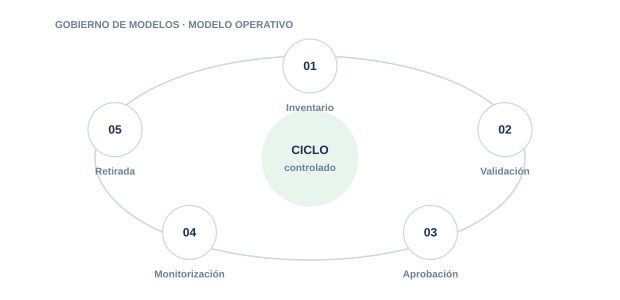

03 · PILAR
Gobierno de modelos
Mantener inventario, documentación, validación y supervisión de modelos y sistemas.

Directorio del pilar4 guías · acceso directo
03.0103.0203.0303.04
Inventario y Shadow AI
Descubre usos autorizados y no autorizados. dependencias y responsables.
Documentación de modelos
Documenta finalidad. límites. datos. evaluación. riesgos y uso previsto.
Ciclo de vida de modelos
Controla altas. versiones. validaciones. cambios significativos y retirada.
Monitorización de modelos
Detecta degradación. drift. pérdida de calidad y cambios de comportamiento.
Gobierno aplicado
GRCReal ↗Recursos de Gobierno de IA en GRCReal
01
InventarioControl y evidencia aplicable
02
ValidaciónControl y evidencia aplicable
03
AprobaciónControl y evidencia aplicable
04
MonitorizaciónControl y evidencia aplicable
05
RetiradaControl y evidencia aplicable
Cada guía incluye explicación, implantación, controles, evidencias, errores habituales, métricas y referencias.